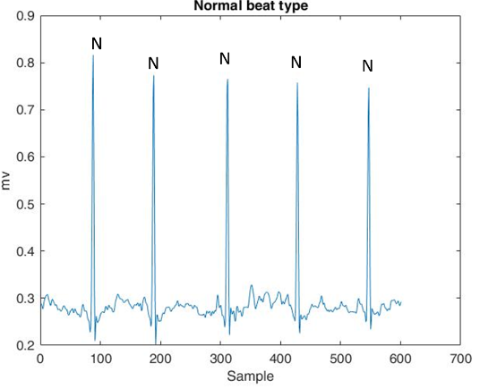
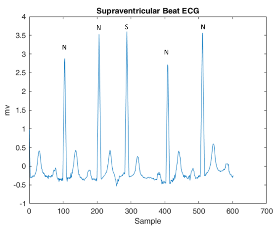
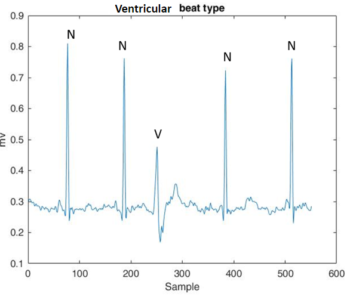

Home
Data
Preprocess
Model
Artificial data
Results
Beat Types

N type
Origin from the SA
Normal conduction pathway

S type
Origin from the atria or AV node
Follow the normal conduction pathway
Shorter RR interval compared to the preceding beat and a longer RR interval following it

V type
Origin from the ventricles
Follow abnormal conduction pathways
Wide and morphologically different QRS complexes